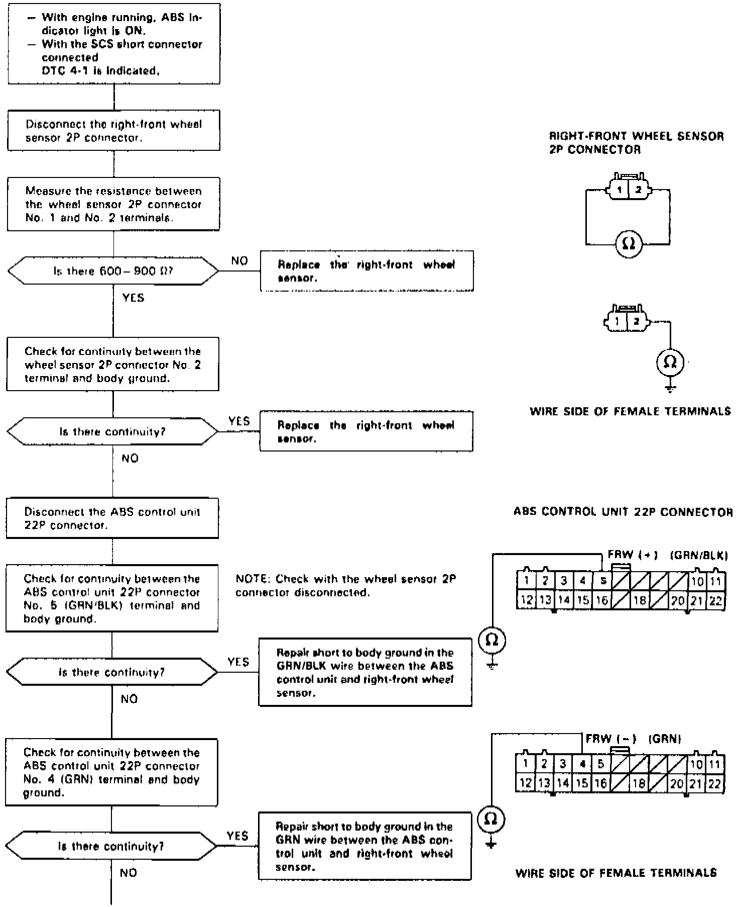
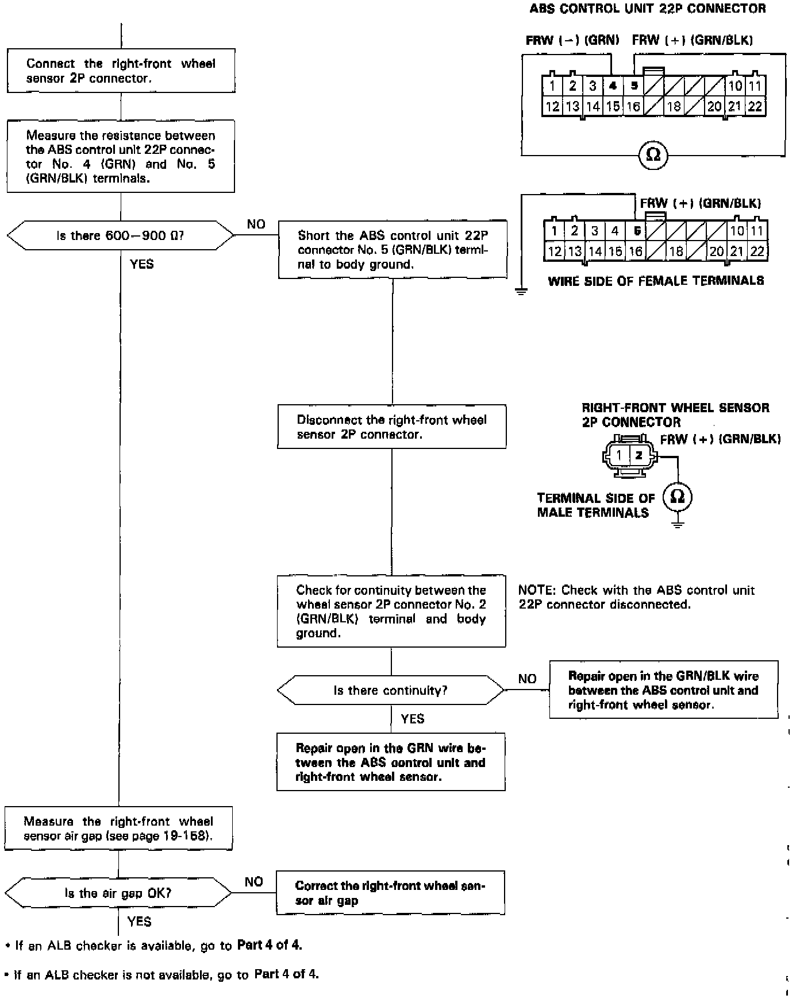
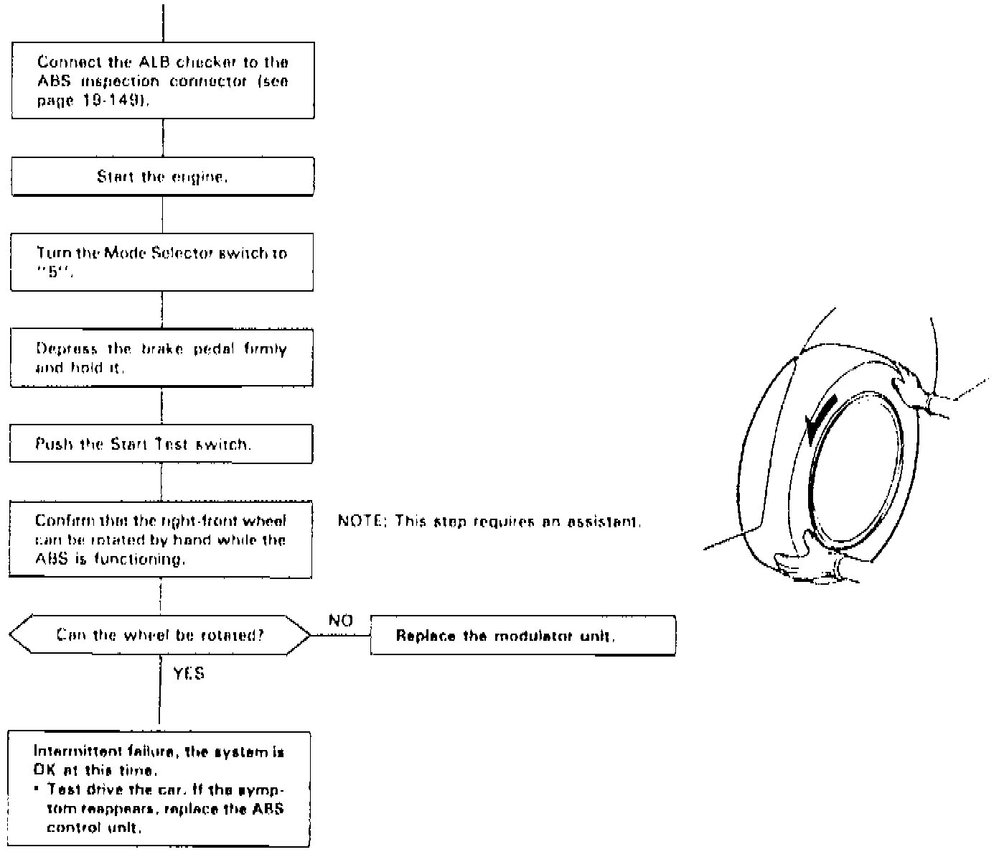
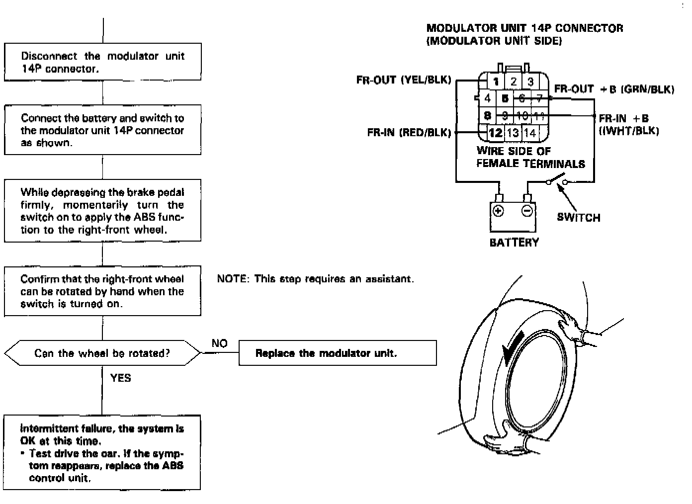

DTC 4-1
Fig. 33 Code 4-1: Right Front Wheel Sensor Diagnosis (Part 1 Of 4):


Fig. 33 Code 4-1: Right Front Wheel Sensor Diagnosis (Part 3 Of 4):


Diagnostic Trouble Code (DTC) 4-1: Right4ront Wheel Sensor Diagnosis
The ABS control unit monitors the wheel sensor signal during the regular diagnosis (at speeds of 6 mph (10 km/h) or more). This diagnosis is not performed when the parking brake signal is ON.
The ABS control unit turns the ABS indicator light on if it detects that there is no wheel sensor signal from the right front wheel.
Possible causes:
- Open circuit, internal short or short to body ground in the right front wheel sensor
- Open circuit or short to body ground in the positive (+) wire between the right front wheel sensor and ABS control unit
- Open circuit or short to body ground in the negative (-) wire between the right-front wheel sensor and ABS control unit
- Positive (+) wire shorted to the negative (-) wire between the right front wheel sensor and ABS control unit
- Loose connector or poor contact of terminals
- Improper right-front wheel sensor air gap
- Faulty ABS control unit
- Missing right-front pulser
- Modulator does not decrease pressure properly